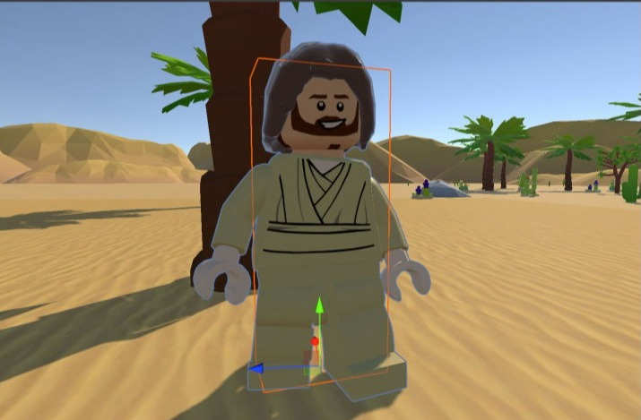

Games & worlds
Prototypes, mechanics, systems and atmospheric spaces designed around player discovery.
Independent studio / Brighton, UK
Pixelagent brings design, development, education and storytelling together to build experiences that are playful, useful and made to be explored.

About Pixelagent
Pixelagent is an independent creative technology studio with more than two decades of experience across animation, game development, interactive media and the web.
The work moves between experimental games, browser-native creation tools, community apps and illustrated stories—connected by curiosity, craft and a belief that technology should help people create, understand or discover something new.
A connected practice
Prototypes, mechanics, systems and atmospheric spaces designed around player discovery.
Interactive comics and branching narratives combining illustration, sound and meaningful choice.
Accessible browser software that removes friction without removing creative depth.
Clear, responsible digital products built around real communities and shared needs.
The process
Ideas become meaningful when people can experience them. The process moves from intent to interaction quickly, then uses evidence—not assumption—to shape what comes next.
Find the central question, audience and emotional north star. Map the world before writing the first line of code.
Turn the idea into something tangible. Build, break and rebuild until the essential interaction feels right.
Develop systems, environments, animation, sound and interface into one coherent experience.
Subtract noise, improve accessibility, tune performance and make every detail earn its place.
Share the work, learn from its audience and continue evolving it through real feedback.
Educator + maker
Pixelagent is shaped by years of leading and lecturing across Animation, Illustration and Games Development. Teaching keeps the work understandable; making keeps the teaching real.
Explore interactive stories ↗Tools + platforms
Build something interesting
Open to creative collaborations, educational projects, prototypes and unusual digital challenges.
Start a conversation ↗